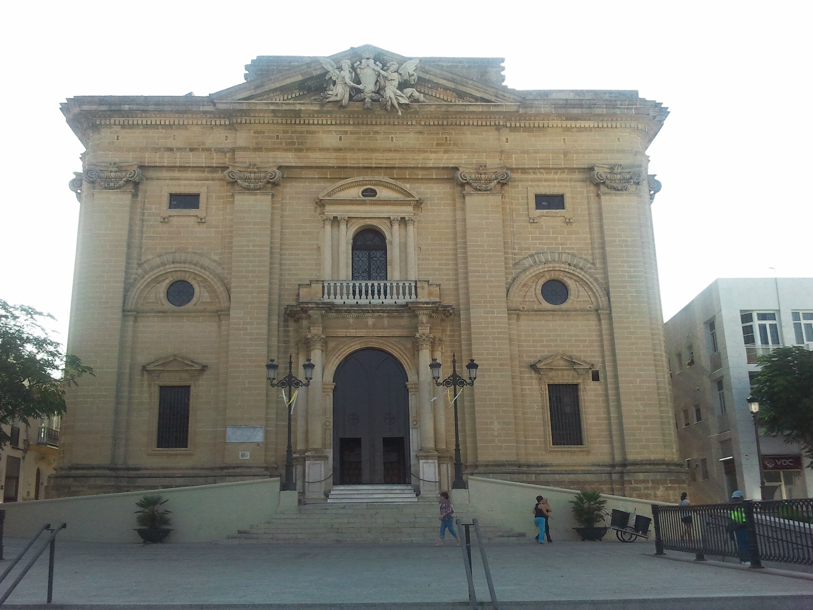

Monuments
Parish Church Of Saint John The Baptist
A beautiful example of Neoclassical architecture and declared a place of cultural interest. It was built between 1773 and 1814 by the architects Torcuato Cayón and Torcuato Benjumeda. Inside, there are two particular points of interest: part of the altarpiece is by Roque Balduque (1552) and there are two paintings from the Zurbarán school.
The Clock Tower
Known locally as "Arquillo del Reloj", this is one of the best-known buildings in Chiclana. It is a civil building constructed in the 18th century which was originally part of the local government building. Given that the nearby church of John the Baptist did not have a bell tower, this tower was used for that purpose.
Church and Convent of Jesus Nazareno
Chiclana´s most important Baroque work. Built between 1667 and 1674 thanks to local business profits from trade with America.
Especially remarkable inside are the Baroque altarpieces (17th and 18th centuries) and the carving of Jesús Nazareno on the main altar. Outside, the Baroque Genovese façade made from Carrara marble is one of the most beautiful in the province.
In this Convent, RR.MM. Augustinian Nuns make the famous Almond Cake (torta de almendras)
Chapel of Santo Cristo de La Vera Cruz, 16Th Century
This is the oldest church in Chiclana (second half of the 16th century). Inside the church the Vera Cruz brotherhood, the oldest in Andalusia, keep their figure of Christ. It is believed to be of Mexican origin and to have miraculous powers. It is for example taken out in a procession to pray for rain in times of drought.
Saint Anne Chapel
Dating from the second half of the 18th century, this is one of Chiclana's most representative buildings because, due to its position overlooking the city, it can be seen from everywhere around. Its structure is octagonal and is surrounded by a series of arches. The inside houses the image of Saint Anne and the Child Virgin (Virgen Niña) by sculptor Domingo Giscardi (18th century).
Open: Monday to Sunday from 08:30 am - 02:30 pm and 03:30 pm - 09:00 pm.
Sancti Petri Castle
Without a doubt this is one of the most emblematic monuments in Chiclana, built on the site of the Roman temple dedicated to Hercules and the Phoenician temple dedicated to Melkart. Today the remains of 18th century military buildings and a 16th century tower are on this island which can be seen from La Barrosa beach and from Sancti Petri. A particularly beautiful sight at sunset.